adalah Daerah Istimewa setingkat provinsi di Indonesia yang merupakan peleburan Negara Kesultanan Yogyakarta dan Negara Kadipaten Paku Alaman.
Klik untuk mengubah Tema
Bantul
merupakan salah satu kabupaten yang berada di Daerah Istimewa Yogyakarta, Indonesia. Ibu kotanya berada di kapanewon Bantul
Sejarah
Bantul menyimpan banyak kisah kepahlawanan, seperti perlawanan Pangeran Mangkubumi di Ambarketawang, upaya pertahanan Sultan Agung di Pleret, dan perjuangan Pangeran Diponegoro di Selarong. Kisah perjuangan pionir penerbangan Indonesia yaitu Adisucipto, pesawat yang ditumpanginya jatuh ditembak Belanda di Desa Ngoto. Sebuah peristiwa penting yang dicatat dalam sejarah adalah Perang Gerilya melawan pasukan Belanda. Saat itu, pasukan Indonesia berada di bawah kepemimpinan Jenderal Sudirman (1948) dan mereka banyak bergerak di sekitar wilayah Bantul.
Wisata
Watu Goyang
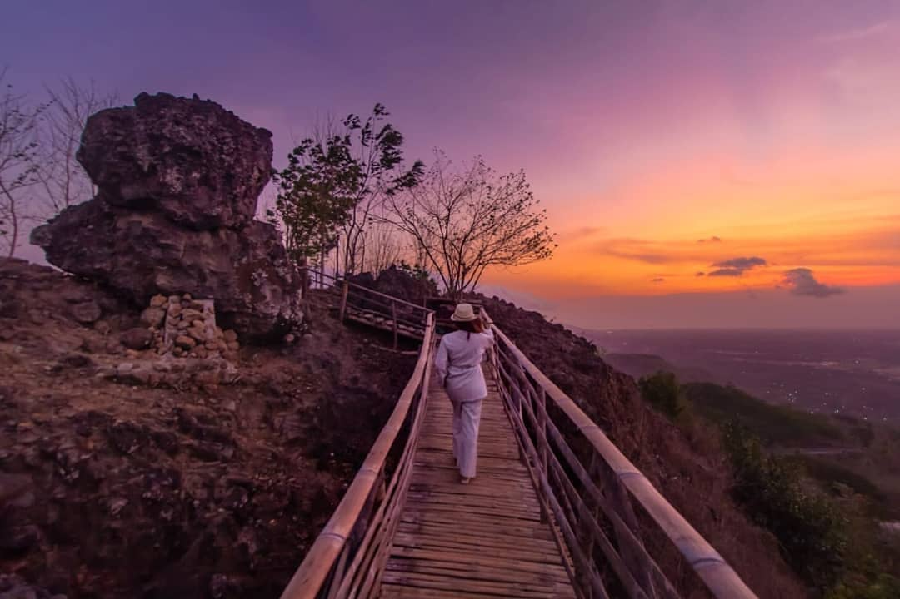
Puncak Pinus Becici
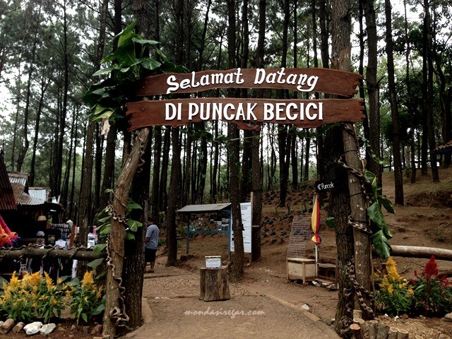
Gumuk Pasir Parangkusumo
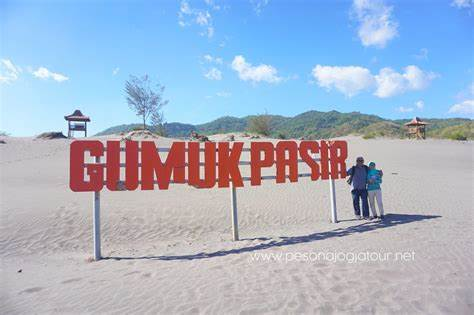
Gunung Kidul
Nama "Gunungkidul" berasal dari bahasa Jawa (Gunung di Selatan), yang mana wilayahnya terletak di jajaran Pegunungan Kidul Daerah Istimewa Yogyakarta.
Sejarah
Dari temuan-temuan arkeologi, kawasan Gunungkidul diperkirakan telah dihuni oleh manusia (Homo sapiens) sejak 700 ribu tahun lalu. Banyak ditemukan petunjuk keberadaan manusia yang ditemukan di gua-gua & ceruk-ceruk di perbukitan karst Gunungkidul, terutama di Kecamatan Ponjong. Kecenderungan manusia menempati Gunungkidul saat itu disebabkan sebagian besar dataran rendah di Yogyakarta masih digenangi air.
Wisata
Pantai Timang
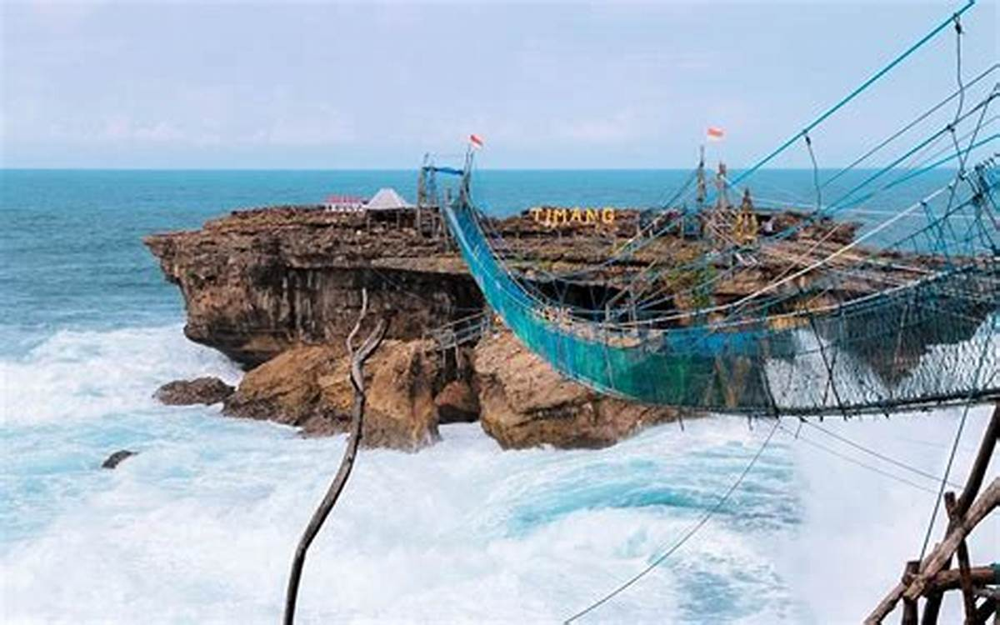
Pantai Ngrawe
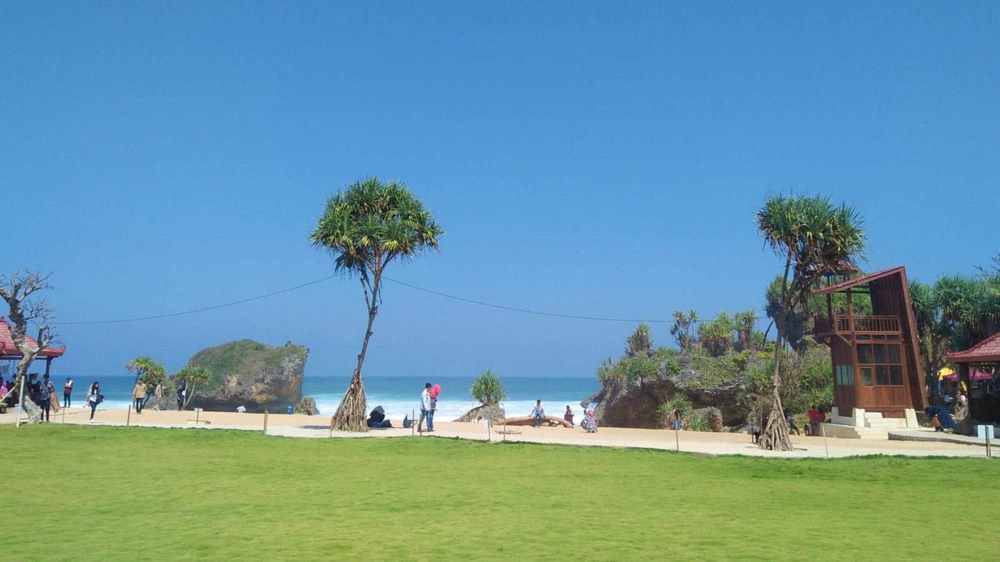
Air Terjun Sri Gethuk
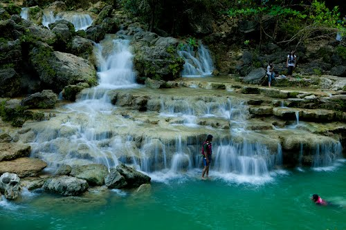
Kulon Progo
Kulon Progo atau Kulonprogo berarti sebelah barat Sungai Progo (kata kulon dalam Bahasa Jawa artinya barat). Kali Progo membatasi kabupaten ini di sebelah Timur.
Sejarah
Pada tahun 1951, Hamengkubuwono IX dan Paku Alam VIII memikirkan perlunya penggabungan antara wilayah Kasultanan yaitu Kabupaten Kulon Progo dengan wilayah Pakualaman yaitu Kabupaten Adikarto. Atas dasar kesepakatan kedua penguasa tersebut, selanjutnya dikeluarkan Undang-Undang Nomor 18 Tahun 1951 yang ditetapkan tanggal 12 Oktober 1951 dan diundangkan tanggal 15 Oktober 1951. Undang-undang ini mengatur tentang Perubahan Undang-Undang Nomor 15 Tahun 1950 untuk Penggabungan Daerah Kabupaten Kulon Progo dan Kabupaten Adikarto dalam lingkungan Daerah Istimewa Yogyakarta menjadi satu kabupaten dengan nama Kulon Progo yang selanjutnya berhak mengatur dan mengurus rumah-tanganya sendiri. Undang-undang tersebut mulai berlaku mulai tanggal 15 Oktober 1951. Secara yuridis formal Hari Jadi Kabupaten Kulon Progo adalah 15 Oktober 1951, yaitu saat diberlakukannya Undang-Undang Nomor 18 Tahun 1951 oleh Menteri Kehakiman Republik Indonesia.
Wisata
Kebun Teh Nglinggo
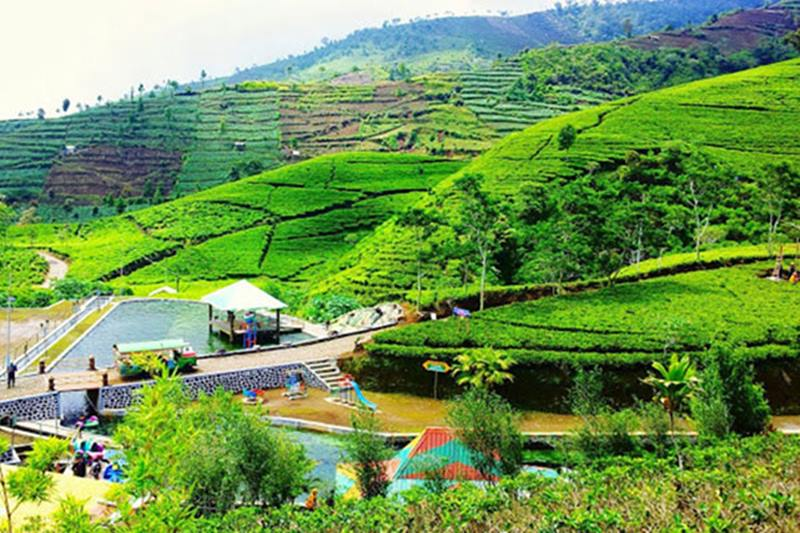
Bukit Ngisis
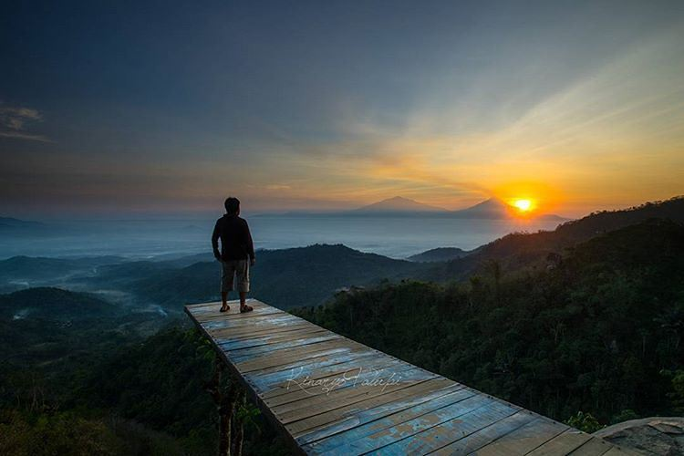
Puncak Suroloyo
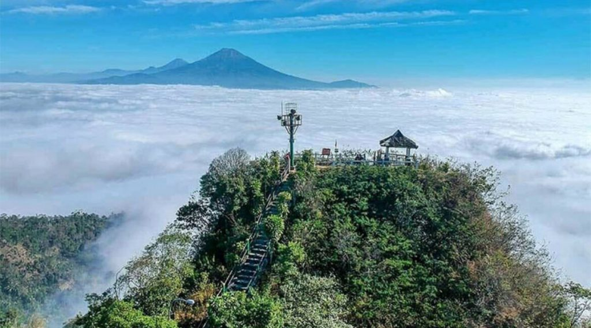
Sleman
merupakan salah satu kabupaten di utara DIY. Ibu kota kabupaten ini berada di kapanewon Sleman. Sleman dikenal sebagai asal buah salak pondoh.
Sejarah
Keberadaan Kabupaten Sleman dapat dilacak pada Rijksblad no. 11 Tahun 1916 tanggal 15 Mei 1916 yang membagi wilayah Kasultanan Yogyakarta dalam 3 Kabupaten, yakni Kalasan, Bantul, dan Sulaiman (yang kemudian disebut Sleman), dengan seorang bupati sebagai kepala wilayahnya. Dalam Rijksblad tersebut juga disebutkan bahwa kabupaten Sulaiman terdiri dari 4 distrik yakni: Distrik Mlati (terdiri 5 onderdistrik dan 46 kalurahan), Distrik Klegoeng (terdiri 6 onderdistrik dan 52 kalurahan), Distrik Joemeneng (terdiri 6 onderdistrik dan 58 kalurahan), Distrik Godean (terdiri 8 onderdistrik dan 55 kalurahan).
Wisata
Tebing Breksi
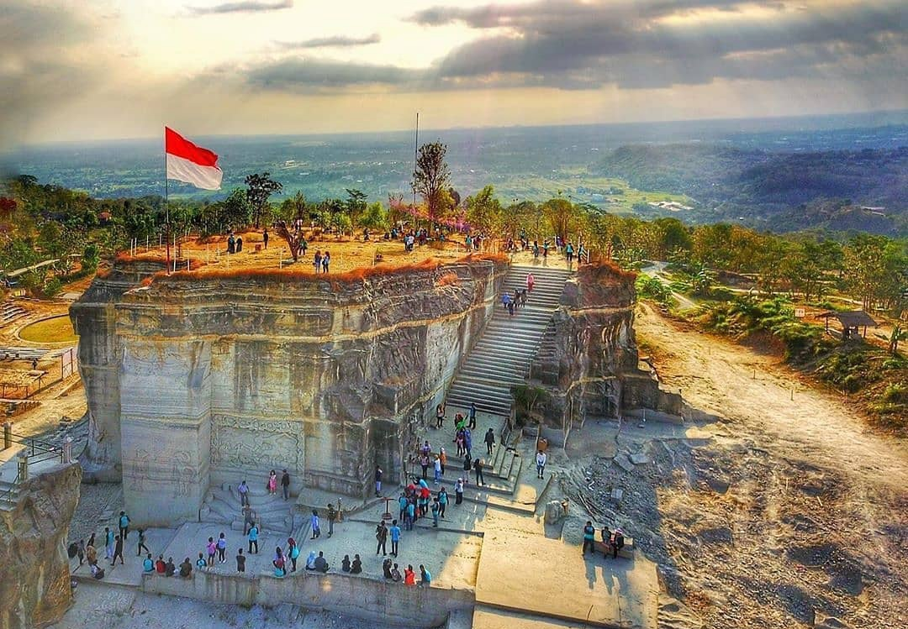
Ratu Boko
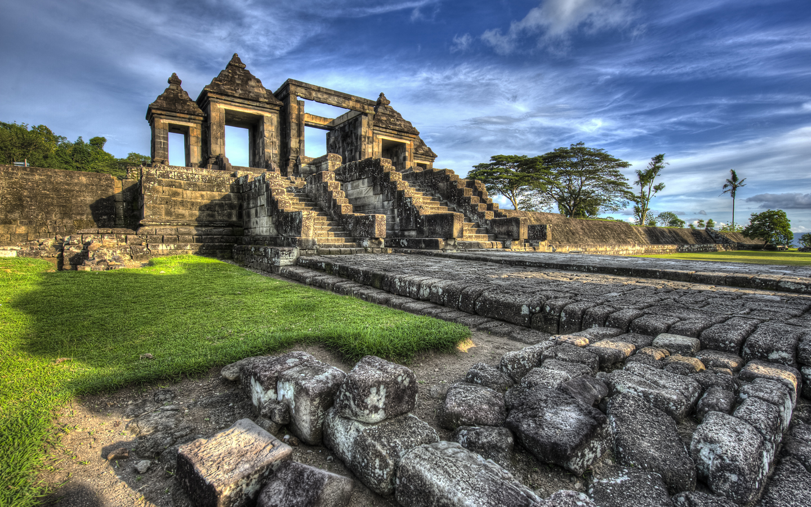
Teras Merapi
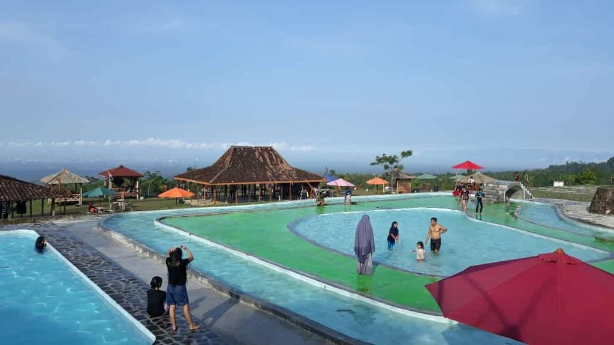
Yogyakarta
Kota Yogya adalah ibu kota dan pusat pemerintahan Daerah Istimewa Yogyakarta, Indonesia. Kota ini adalah kota besar yang mempertahankan konsep tradisional dan budaya Jawa. Kota Yogyakarta adalah kediaman bagi Sultan Hamengkubuwana dan Adipati Paku Alam. Kota Yogyakarta merupakan salah satu kota terbesar di Indonesia dan kota terbesar keempat di wilayah Pulau Jawa bagian selatan menurut jumlah penduduk. Kota Yogyakarta juga pernah menjadi ibu kota RI pada tahun 1946.